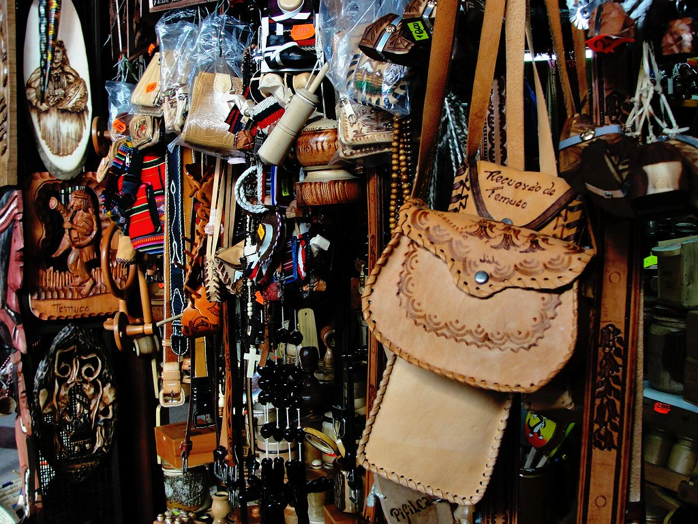
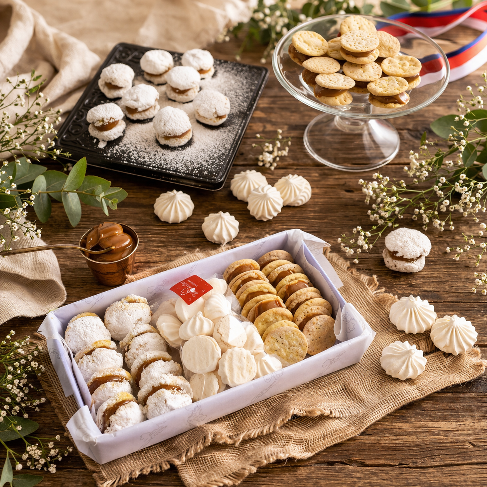

Talleres de artesanía
Conoce técnicas y oficios tradicionales de La Araucanía de la mano de artesanas y artesanos locales.
Consultar disponibilidadIdeas para acercarte a la naturaleza y a la vida local de la región, con actividades para todos los ritmos.

Artesanía, sabores y recorridos guiados para vivir el territorio con respeto.

Conoce técnicas y oficios tradicionales de La Araucanía de la mano de artesanas y artesanos locales.
Consultar disponibilidad
Descubre productos y preparaciones propias de la zona, desde la huerta mapuche hasta la cocina de costa.
Consultar disponibilidad
Explora senderos y paisajes junto a personas que conocen el territorio y su historia.
Ver rutas guiadasCombina una ruta, una actividad cultural y una parada gastronómica para conocer La Araucanía a tu manera.